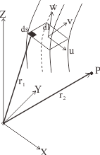
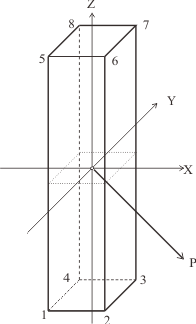
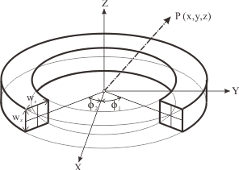

矩形断面の導体による磁場解析
2022-9-1 (R.1)
吉田 清
kiyoshi.yoshida@eagle.ocn.ne.jp
1. はじめに
矩形断面の導体から発生する磁束密度(磁場)とベクトルポテンシャルの計算方法を示す。矩形断面導体には、横形状が直線と円弧からの磁場の解析は、Sackett[1][2]の式が広く使われている。
2. 矩形断面直線導体の磁場
矩形断面導体の磁場は、ビオサバール法則から断面内と長手方向を積分して求めている。
\[B\left(p\right)=\left(\frac{\mu_0}{4\pi}\right)J\int_{l}\int_{S}\frac{dl\times\left(r_2-r_1\right)}{\left|r_2-r_1\right|^3}dS \tag{1} \]
\[A\left(p\right)=\left(\frac{\mu_0}{4\pi}\right)J\int_{l}\int_{S}\frac{dl}{\left|r_2-r_1\right|}dS \tag{2} \]
ここで、
| μ0 : |
真空中の透磁率=4π*10-7 |
| J : |
電流密度 (A/m2) |
r1 : |
導体の位置のベクトル |
r2 : |
計算点のベクトル |
dl : |
電流方向のベクトル |
dS : |
電流方向の垂直面の面積 |

Fig. 1 General coil generation
3. 矩形断面の直線導体の磁場とベクトルポテンシャル
矩形断面の直線導体からのP点(xp, yp, zp)での磁場は、積分せずに、立方体の8か所の角の点から求めることができる。また、Bz=0である。
\[ B_x=-\left(\frac{\mu_0}{4\pi}\right)\sum_{j=1}^{8}sgn\left(x_jy_jz_j\right)\left[w_jln\left(R_j+u_j\right)+u_jln\left(R_j+w_j\right)-v_j\tan^{-1}{\left(\frac{u_jR_j+u_j^2+v_j^2}{v_jw_j}\right)}\right] \tag{3} \]
\[B_y=\left(\frac{\mu_0}{4\pi}\right)\sum_{j=1}^{8}sgn\left(x_jy_jz_j\right)\left[w_jln\left(R_j+v_j\right)+v_jln\left(R_j+w_j\right)-u_j\tan^{-1}{\left(\frac{v_jR_j+u_j^2+v_j^2}{u_jw_j}\right)}\right] \tag{4} \]
ただし、
\( sgn(u) = \begin{cases} +1 & ( u \ge 0 ) \\ -1 & ( u \lt 0 ) \end{cases} \),
\( R_j=\sqrt{x_j^2+y_j^2+z_j^2} \),
\( u_j=x_p-x_j, v_j=y_p-y_j, w_j=z_p-z_j \)
Fig. 2に示す6面体の8か所の角の座標 (xj, yj, zj)は、各辺の長さをlx, ly, lz とし、
x1=-lx/2, x2=lx/2, y1=-ly/2, y2=ly/2, z1=-lz/2, z2=lz/2から、以下のようになる。
| j | xj | yj | zj |
| 1 | x1 | y1 | z1 |
| 2 | x2 | y1 | z1 |
| 3 | x2 | y2 | z1 |
| 4 | x1 | y2 | z1 |
| 5 | x1 | y1 | z2 |
| 6 | x2 | y1 | z2 |
| 7 | x2 | y2 | z2 |
| 8 | x1 | y2 | z2 |
矩形断面の直線導体のベクトルポテンシャルは、以下の式で求まる。また、Ax=Ay=0である。
\[ A_z=-\left(\frac{\mu_0}{4\pi}\right)\sum_{j=1}^{8}sgn\left(x_jy_jz_j\right)\left(A5+A6+A7\right) \tag{5} \]
\[ A5={v_jw}_jln\left(R_j+u_j\right)+u_jw_jln\left(R_j+v_j\right)+u_jw_jln\left(R_j+w_j\right) \]
\[ A6=-v_j^2\tan^{-1}{\left(\frac{u_jR_j+u_j^2+v_j^2}{v_jw_j}\right)}-u_j^2\tan^{-1}{\left(\frac{u_jR_j+u_j^2+v_j^2}{u_jw_j}\right)} \]
\[ A7=-\sum_{j=1}^{4}\int_{w_1}^{w_5}sgn\left(u_jv_j\right)s\tan^{-1}{\left(\frac{v_j\sqrt{u_j^2+v_j^2+s^2}+u_j^2+w_j^2}{v_js}\right)ds} \]
ただし、\( s=z_p\ -z_j\ \)

Fig. 2 Straight segment
4. 矩形断面の円弧導体の磁場とベクトルポテンシャル
矩形断面の円弧導体の磁場は、4か所の角の点を角度ϕ1 からϕ2まで数値積分して求める。ただし、Bz=0である。
\[ B_x=\left(\frac{\mu_0}{4\pi}\right)\int_{\emptyset_1}^{\emptyset_2}{\sum_{j=1}^{4}sgn\left(z_j\left[r_0-r_j\right]\right)\left[R_j+u_j\cos{\left(\emptyset\right)}ln\left(R_j+r_j-x_p\right)+u_j\cos{\left(\emptyset\right)}\right]\cos{\left(\emptyset\right)}d\emptyset} \tag{6} \]
\[ B_y=\left(\frac{\mu_0}{4\pi}\right)\int_{\emptyset_1}^{\emptyset_2}{\sum_{j=1}^{4}sgn\left(z_j\left[r_0-r_j\right]\right)\left[R_j+u_j\cos{\left(\emptyset\right)}ln\left(R_j+r_j-x_p\right)+u_j\cos{\left(\emptyset\right)}\right]\sin{\left(\emptyset\right)}d\emptyset} \tag{7} \]
\[ B_z=\left(\frac{\mu_0}{4\pi}\right)\int_{\emptyset_1}^{\emptyset_2}{\sum_{j=1}^{4}sgn\left(z_j\left[r_0-r_j\right]\right)\left[u_j\sin{\left(\emptyset\right)}\tan^{-1}{\left(\frac{u_j\left[r_j\ -{\ x}_p\cos{\left(\emptyset\right)}\right]}{r_jx_p\sin{\left(\emptyset\right)}}\right)}-w_jln\left(R_j+r_j-x_p\cos{\left(\emptyset\right)}\right)+x_p\cos{\left(\emptyset\right)ln\left(R_j+z_j\right)}\right]d\emptyset} \tag{8} \]
ただし、Fig.3に示す円弧の4か所の角の座標 は以下の表で, \( r_0=\frac{r_1+r_2}{2\ } \)
| j | rj | zj |
| 1 | r1 | z1 |
| 2 | r1 | z2 |
| 3 | r2 | z1 |
| 4 | r2 | z2 |
ベクトルポテンシャルは、4か所の角の点を角度ϕ1 からϕ2まで数値積分して求める。ただし、Az=0
\[ A_x=\left(\frac{\mu_0}{4\pi}\right)\int_{\emptyset_1}^{\emptyset_2}\sum_{j=1}^{4}{sgn\left(z_j\left[r_0-r_j\right]\right)\left(A7+A8\right)\sin{\left(\emptyset\right)d\emptyset}} \tag{9} \]
\[ A_y=-\left(\frac{\mu_0}{4\pi}\right)\int_{\emptyset_1}^{\emptyset_2}\sum_{j=1}^{4}{sgn\left(z_j\left[r_0-r_j\right]\right)\left(A7+A8\right)\cos{\left(\emptyset\right)d\emptyset}} \tag{10} \]
\[ A7=\frac{w_jR_j}{2}+w_jx_p\cos{\left(\emptyset\right)}ln\left(R_j+r_j-x_p\cos{\left(\emptyset\right)}\right)+\left(\frac{r_j}{2}+\frac{x_p^2}{2}\ -\ x_p^2{cos}^2\left(\emptyset\right)\right)ln\left(R_j+w_j\right) \]
\[ A8=x_p^2\sin{\left(\emptyset\right)}\cos{\left(\emptyset\right)}\tan^{-1}{\left[\frac{\left(x_p\cos{\left(\emptyset\right)}-r_j\right)R_j\ -\ x_{p\ }^2-\ r_j+2x_pr_j\cos{\left(\emptyset\right)}}{w_jx_p\sin{\left(\emptyset\right)}}\right]} \]
ただし、ソレノイドの場合は、ϕ1=0、ϕ2=360°まで積分することによって求まることができる。

Fig. 3 Circular arc segment
5. 検証
5.1 直線導体
長さz1 =-1 (m)から z2=1 (m)までの直線電流I=1.0 (MA)からの磁場とベクトルポテンシャルは、Sackett[2]とUrankar[3]による磁場計算はTable 1 のように同じ値を示す。
Table 1 Magnetic field and vector potential from a finite straight segment with rectangular cross section
| | Sackett [2] | ← | Urankar [3] | ← |
| r (m) | By (T) | Az (Tm) | By (T) | Az (Tm) |
| 0.00 | 0.00000000 | 0.67308428 | 0.00000000 | 0.67308428 |
| 0.20 | 0.96533257 | 0.46199982 | 0.96533257 | 0.46199982 |
| 0.40 | 0.46399408 | 0.32966056 | 0.46399408 | 0.32966056 |
| 0.60 | 0.28603929 | 0.25695885 | 0.28603929 | 0.25695885 |
| 0.80 | 0.19543263 | 0.20967408 | 0.19543263 | 0.20967408 |
| 1.00 | 0.14159266 | 0.17639132 | 0.14159266 | 0.17639132 |
5.2. ソレノイド
半径 r0 =0.5 (m)で、巻線の半径幅0.1(m)、高さ0.5(m)、電流I=1.0 (MA)ののソレノイドからの磁場とベクトルポテンシャルは、Sackett[2]と枻川[4]による磁場計算はTable 2 のように同じ値を示す。Urankar[3]も同一の値を示す。
Table 2 Magnetic field and vector potential from solenoid
| | | Sackett [2] | ← | ← | 枻川 [4] | ← | ← |
| x, r (m) | z (m) | Bx (T) | Bz (T) | Ay (Tm) | Br (T) | Bz (T) | Aϕ (Tm) |
| 0.00 | 0.00 | 0.00000000 | 1.12607093 | 0.00000056 | 0.00000000 | 1.12607093 | 0.00000000 |
| 0.10 | 0.00 | 0.00000000 | 1.14815574 | 0.05685278 | 0.00000000 | 1.14815574 | 0.05685278 |
| 0.10 | 0.10 | 0.04300644 | 1.10283507 | 0.05465601 | 0.04300644 | 1.10283507 | 0.05465601 |
| 0.20 | 0.00 | 0.00000000 | 1.21857011 | 0.11713975 | 0.00000000 | 1.21857011 | 0.11713975 |
| 0.20 | 0.20 | 0.16559313 | 1.01476227 | 0.09902459 | 0.16559313 | 1.01476227 | 0.09902459 |
| 0.40 | 0.00 | 0.00000000 | 1.55066782 | 0.26549237 | 0.00000000 | 1.55066782 | 0.26549237 |
| 0.40 | 0.40 | 0.38152200 | 0.44891035 | 0.11217933 | 0.38152200 | 0.44891035 | 0.11217933 |
5.3. 円弧導体
半径 r0 =0.5 (m)で、巻線の半径幅0.1(m)、高さ0.5(m)、電流I=1.0 (MA)ののソレノイドからの磁場は、Sackett[2]とCOIL[5][6]による計算はTable 3 のように同じ値を示す。
Table 3 Magnetic field from circular arc with rectangular cross section
| Angle (deg) | | Position (m) | | | Sackett [2] | ← | ← | COIL [5][6] | ← | ← |
| Φ1 | Φ2 | x | y | z | Bx (T) | By (T) | Bz (T) | Bx (T) | By (T) | Bz (T) |
| 0 | 360 | 0.0 | 0.0 | 0.0 | 0.00000000 | 0.00000000 | 1.12607093 | 0.00000000 | 0.00000000 | 1.12607093 |
| 0 | 90 | 0.1 | 0.0 | 0.1 | 0.04082277 | 0.03484985 | 0.33647590 | 0.04082277 | 0.03484985 | 0.33647590 |
| 0 | 180 | 0.1 | 0.0 | 0.1 | 0.02150322 | 0.05651516 | 0.55141753 | 0.02150322 | 0.05651516 | 0.55141753 |
| 0 | 270 | 0.1 | 0.0 | 0.1 | 0.00218367 | 0.03484985 | 0.76635917 | 0.00218367 | 0.03484985 | 0.76635917 |
| 0 | 360 | 0.1 | 0.0 | 0.1 | 0.04300644 | 0.00000000 | 1.10283507 | 0.04300644 | 0.00000000 | 1.10283507 |
| 0 | 180 | 0.0 | 0.0 | 0.1 | 0.00000000 | 0.05565414 | 0.54175653 | 0.00000000 | 0.05565414 | 0.54175653 |
| 0 | 180 | 0.0 | 0.2 | 0.1 | -0.00000002 | 0.12176934 | 0.82723541 | 0.00000000 | 0.12176934 | 0.82723541 |
| 0 | 180 | 0.0 | 0.4 | 0.1 | 0.00000000 | 0.25752170 | 1.27927837 | 0.00000000 | 0.25752170 | 1.27927837 |
| 0 | 180 | 0.0 | 0.6 | 0.1 | 0.00000000 | 0.22203583 | -0.58167446 | 0.00000000 | 0.22203583 | -0.58167446 |
| 0 | 180 | 0.0 | 0.8 | 0.1 | 0.00000000 | 0.08259314 | -0.27225982 | 0.00000000 | 0.08259314 | -0.27225982 |
| 0 | 180 | 0.0 | 1.0 | 0.1 | -0.00000001 | 0.03330655 | -0.15450474 | 0.00000000 | 0.03330655 | -0.15450474 |
6. まとめ
ここで示した磁場計算のうち、ソレノイド以外は、閉ループを形成していないため電荷保存則が成立しないので、正しい磁場を示していない。そのため、直線導体と円弧導体を組みあわせて、閉じた電流路を作らなければならない。
各項目の磁場は付属のWebpage上で計算できる。各webpage(html)をダウンロードすると、pythonで記述した計算プログラムも参照できる。
参考文献
- S. J. Sackett, " Calculation of electromagnetic fields and forces in coil systems of arbitrary geometry", UCRL-77244 (1975) Lawrence Livermore Laboratory, Livermore, USA
- S. J. Sackett, "EFFI- A Code for Calculating the Electromagnetic Field, Force, and Inductance in Coil Systems of Arbitrary Geometry", UCRL-52402 (1978) Lawrence Livermore Laboratory, Livermore, USA.
- L. K. Urankar, "Vector Potential and Magnetic Field of Current-Carrying Finite Arc Segment in Analytical Form, Part III: Exact Computation for Rectangular Cross Section", IEEE Tran. on Magnetics, 18 (1982) 1860-1867
- 柁川一弘, 海保勝之：「矩形断面円筒形コイル用自己インダクタンス計算式の適用範囲について」、低温工学 30-7(1995)324-332
- 島本 進：「中空導体を用いた超伝導電磁石の実験」、低温工学 5-6（1970）295-304
- 吉田 清、礒野高明、杉本 誠、奥野 清:「空心コイル電磁計算プログラム:COIL」、JAERI-Data/Code 2003-014 (2003)